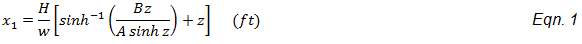

1. Catenary Model
1.1 Overview
A catenary is a curve that can be used to model the position and tension of
an overhead cable. It is assumed to be formed by a perfectly flexible, yet
inextensible cable of uniform density and cross section hanging freely from
two fixed points. For the typical span lengths and cable tolerances on
transmission lines, these assumptions can be safely made.
1.2 Parameters
The following parameters are needed to define a catenary:
- Horizontal tension
- Unit weight
- Horizontal spacing, from left end point to right end point
- Vertical spacing, from left end point to right end point
1.3 Coordinate System
The coordinate system origin (0, 0) is the catenary lowpoint.
1.4 Equations
End Points

Where:
X Coordinate
Y Coordinate
Length
Chord Length
Tension
Tension - Average
Sag - Approximate
Sag - Exact
-
Find the catenary x value that has a tangent slope equal to the chord
line.
-
Calculate the chord y value at the sag point.

-
Calculate the catenary y value at the sag point.
-
Get the height difference between the chord and the catenary curve.
Slope